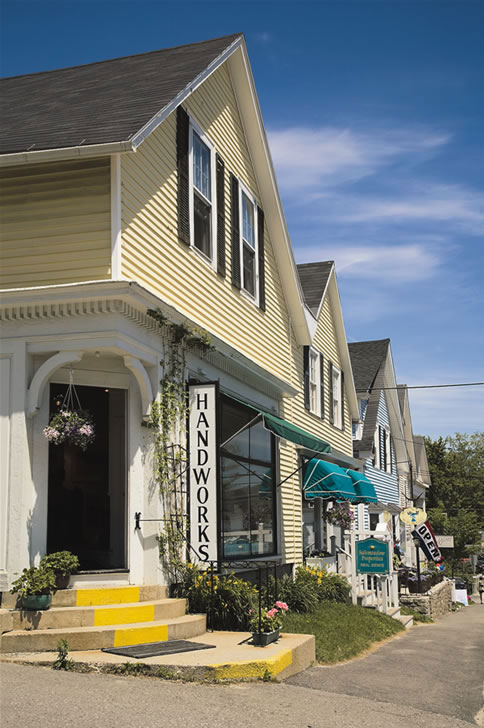

The town of Blue Hill is a charming center of great restaurants, art galleries and bed-and-breakfasts. The entire peninsula, including the towns of Brooklin, Brooksville, Castine, Harborside, Penobscot and Sedgwick, is a scenic, quiet and pleasant retreat to a calmer and less commercial age.
Besides the stunning blue and green vistas of the area, other attractions include boating in the calm waters of Blue Hill Bay or hiking and bird-watching in Holbrook Island Sanctuary. And don’t miss nearby Acadia National Park.
Helen and Scott Nearing inspired the back-to-the-land movement through their “Good Life” books, which they wrote from their homestead on the Blue Hill Peninsula. You can be inspired by their passion for simple and wise living with a visit to The Good Life Center in Harborside, where you can tour their hand-built stone house and organic garden. Call ahead or visit the Web site to check hours before you visit: (207) 326-8211; www.goodlife.org.
Another resident of the Blue Hill Peninsula and influential force in the sustainability movement is Eliot Coleman, author of The New Organic Grower and Four-Season Harvest. Coleman proved that you can grow vegetables year-round, even in this part of Maine. To learn more, visit his Web site, www.fourseasonfarm.com.
Do you live in Blue Hill? Have you visited? Please post your comments below.
Population: 2,346
County: Hancock
Climate: a four-season climate; cold winters with lots of snow; cool summers; ample rainfall; fog possible year-round
Cost of Living Index: 106.1
Median Home Price: $197,000
Alternative energy: net metering and rebates for solar systems
Don’t miss: the Nearing homestead
|
 SUE ANNE HODGES Blue Hill has many historic buildings and locally owned shops that sell handmade crafts. |
|
|